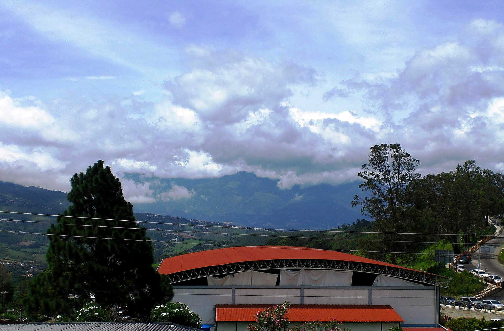
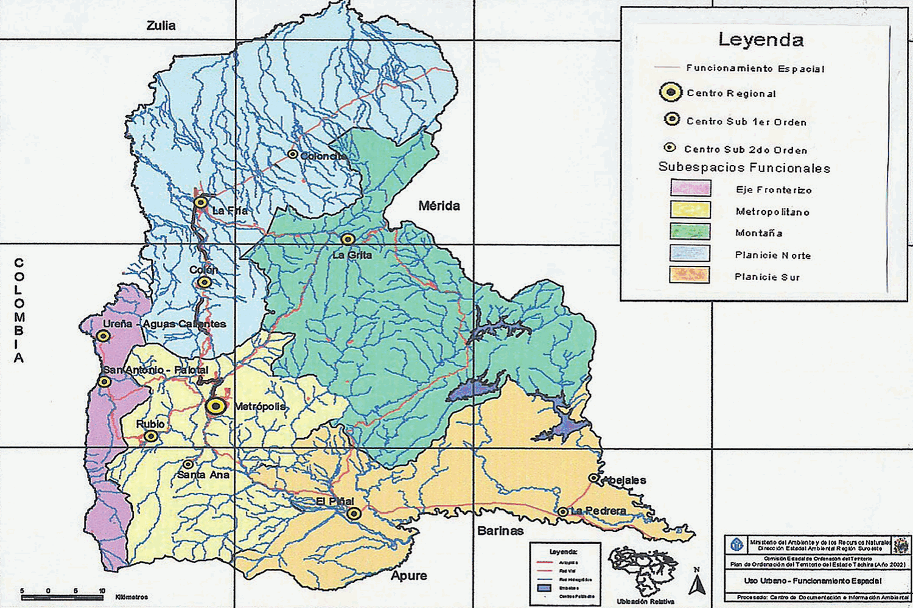
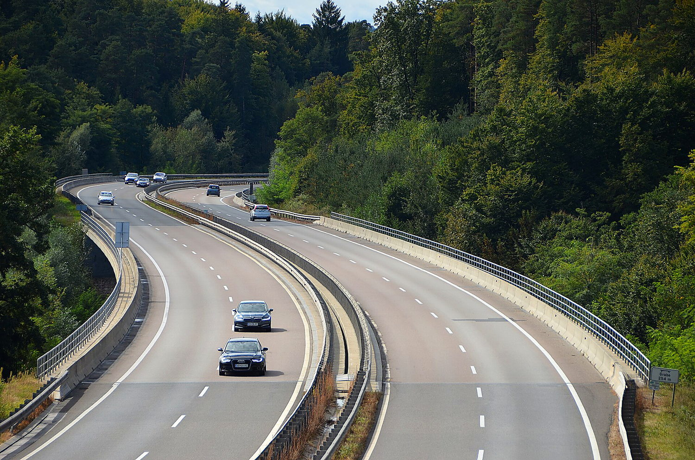
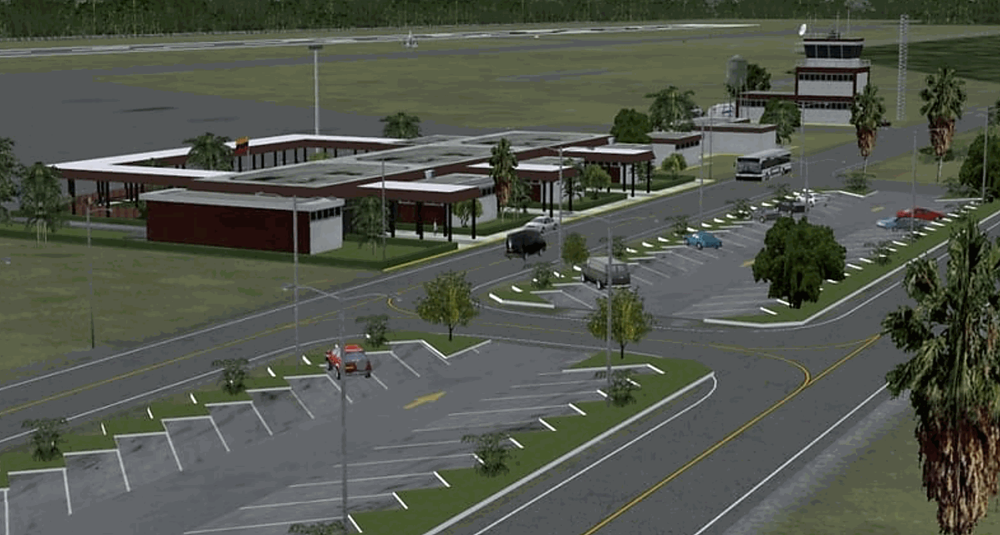
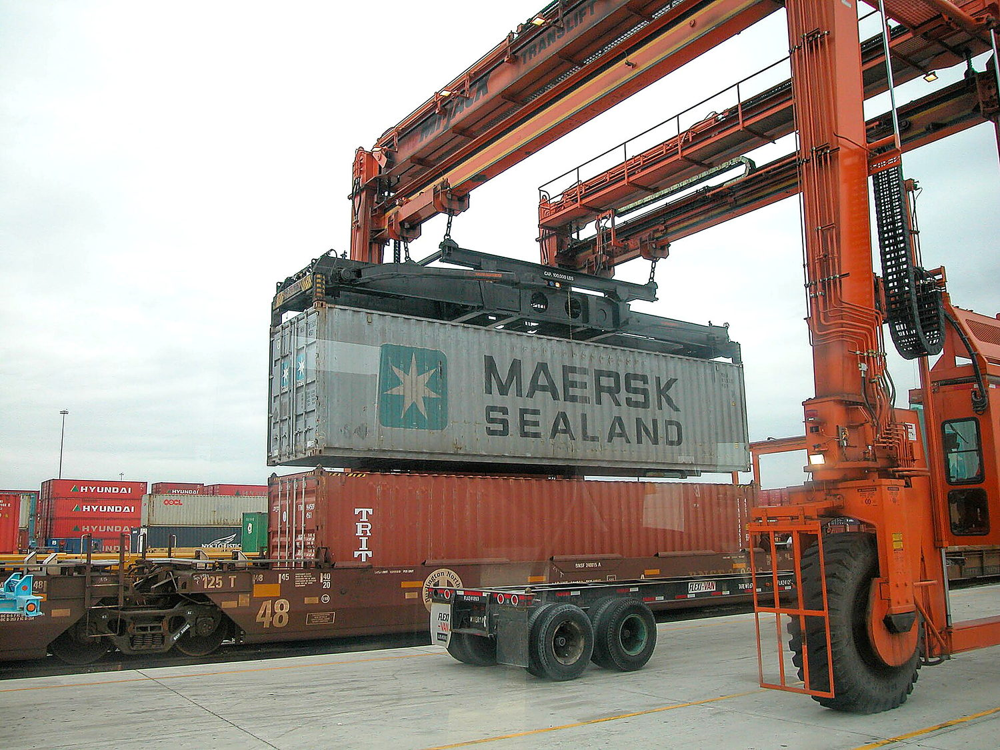
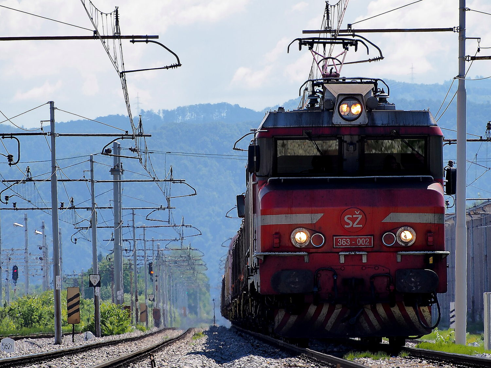

Un sistema de transporte integrado, binacional, sustentable y competitivo para el estado Táchira: la región que puede convertirse en el corazón logístico de Venezuela y su puente hacia Sudamérica.
El Táchira colinda con Norte de Santander (Colombia) y concentra el principal corredor comercial entre ambos países. Sin embargo, su infraestructura obsoleta frena la competitividad de toda la región.
Más del 60% del comercio terrestre Venezuela–Colombia transita el Táchira.
La Zona Económica Especial Binacional abre una ventana para inversión logística e industrial.
Vialidades deterioradas e infraestructura obsoleta que encarecen la cadena logística regional.

Corredores binacionales y de integración que conectan la frontera, la metrópoli y el resto del país.
El corredor estructurante del occidente tachirense. Dos estructuras —el Tramo II y el Viaducto La Colorada— concentran el 58% de la inversión.

Conectividad aérea, logística y tecnología que transforman una red de carreteras en un verdadero sistema multimodal.

Aeropuerto La Fría preparado para el Airbus A330F, con pista de 2.500 m y terminal de 8.000 m². Capacidad de 200.000 ton/año.

Plataforma logística multimodal con potencial de 1.000+ ha, sinergia con la ZEEB y conexión aérea, terrestre y ferroviaria.

Eje ferroviario occidental de 250 km y un sistema inteligente de transporte: peaje electrónico, pesaje automatizado y plataforma digital binacional.
Sumemos voluntad política, inversión y participación comunitaria. Esta propuesta es una invitación a los profesionales, técnicos y ciudadanos a construir juntos el futuro de la región.